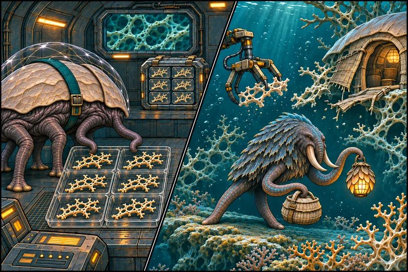
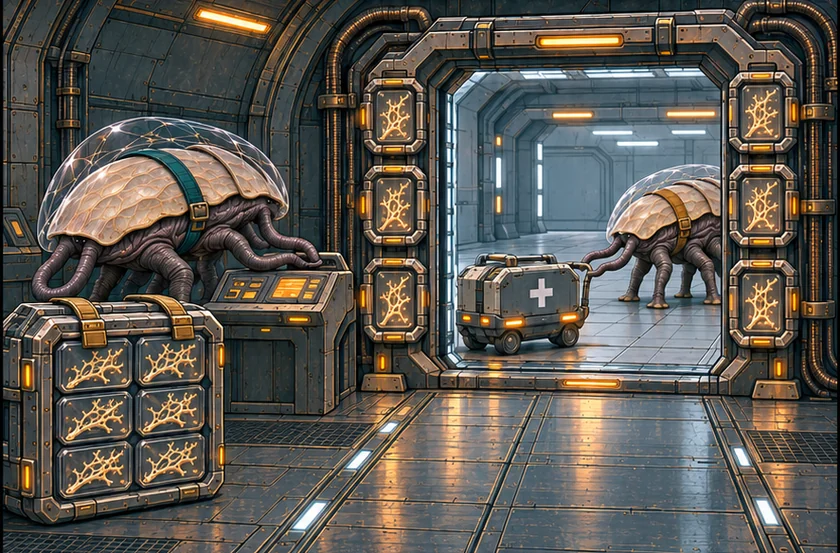
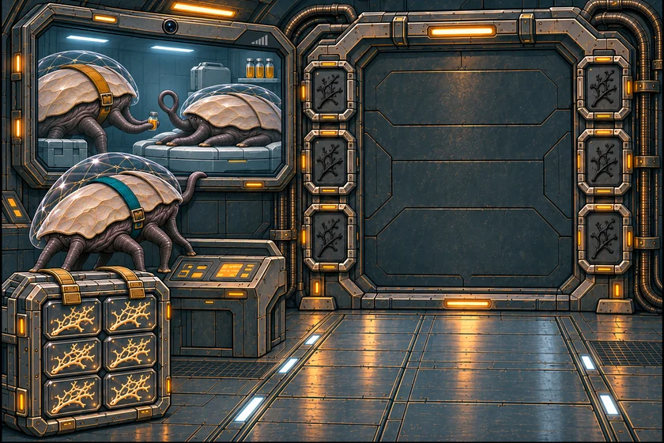

THE ORUUN · FROM ABOVE
Enough for the Crossing
A patient on the next station needs medicine today.
For two hundred years, the Dryborn have taken from the first alien people humanity will meet. They could have known.
The Dryborn cut the reefs for Rootglass, the grown glass that holds the Reach’s gates steady. Every crossing uses some up. They build the network; they own none of it. Their crews mistake Oruun homes and lamps for wild reef life. An early warning was filed away.



Read the words
A ship would take weeks. The gate is faster, but every opening burns living reef.
Six pieces go through with the medicine. Siv stays on this side of the gate.
“Will there be another dose?” the patient asks. Six more pieces wait in the case.